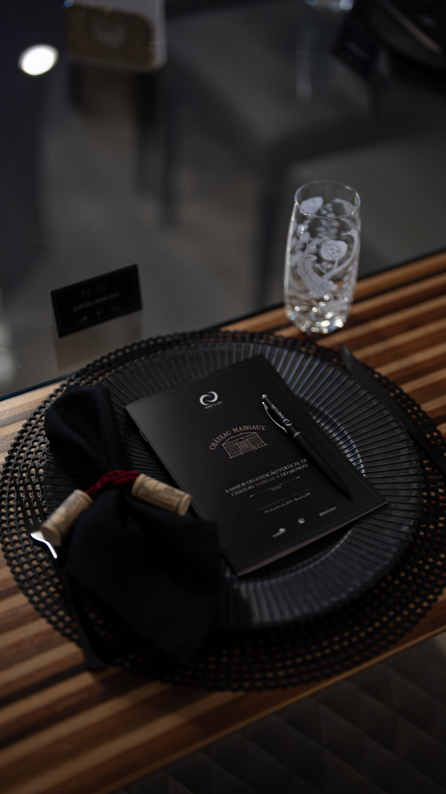

01 — Seleção
Um círculo,
não um cadastro
A entrada acontece por convite ou por manifestação de interesse, analisada individualmente. Cada membro é escolhido por afinidade.
02 — Curadoria
Curadoria
com autoria
Cada experiência nasce de relações íntimas com produtores, chefs, maisons e parceiros que compartilham da mesma exigência. Nada é terceirizado, os contatos são feitos sem intermediários, e tudo é pensado para reunir o grupo em um ambiente de confiança e escassez.

03 — Prioridade
Acesso
antes de todos
As safras raras, os rótulos de alocação, os encontros limitados. Quem pertence ao nosso círculo tem em suas mãos o poder de escolha e de se antecipar nas melhores oportunidades do ramo.

04 — Escassez
Experiências
que não se repetem
Verticais históricas que ultrapassam uma boa seleção e entregam um conjunto muito provavelmente impossível de repetir.

05 — Pertencimento
Pertencimento,
não participação
A diferença entre ficar sabendo e estar presente se define neste grupo. Aqui, cada pessoa contribui para a história, e nós a estamos escrevendo.

06 — Conexões
Recomendações
do círculo
Apenas membros indicam membros. Dentro do círculo, cada indicação — seja um rótulo, um restaurante, um profissional ou um destino — carrega o peso e a confiança de quem a faz. Uma rede onde as melhores portas se abrem por dentro.